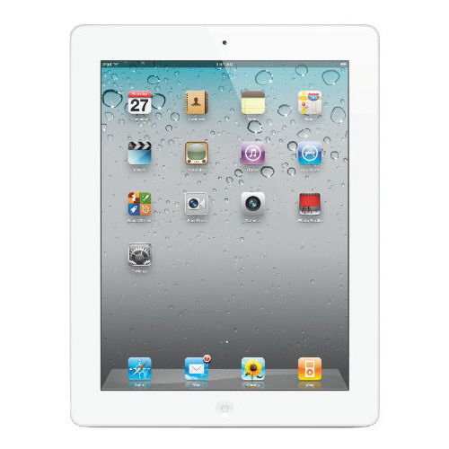

IPad
The iPad, launched by Apple in April 2010, was a groundbreaking tablet that popularized the category. It featured a 9.7-inch LED-backlit display with a resolution of 1024 x 768, offering a vibrant viewing experience for browsing, reading, and media consumption. Powered by the Apple A4 chip, it provided smooth performance for apps and games.
The device ran on iOS and supported multitouch gestures, making it user-friendly. It came with options for Wi-Fi or Wi-Fi + 3G connectivity, allowing users to access the internet on the go. The iPad initially offered 16GB, 32GB, and 64GB storage options.
Its design was sleek and lightweight, promoting portability. The iPad also featured a front-facing camera for video chatting through FaceTime, though it lacked a rear camera. It received positive reviews for its versatility, paving the way for the future of tablets and influencing the development of subsequent iPad models.